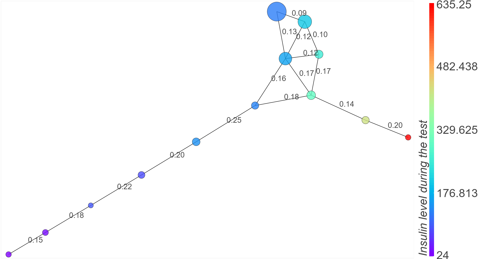

Research in AI
This section shows up the visualization method I worked on during my Research experience in Warsaw.
We were three taking part of this project, two supervisor and me. They were guiding and correcting me and I was in charge of creating the theory, implementing it with a python library or with Bokeh a web visualization library.
This method let the user visualize complex dataset in high dimensional spaces. This method can be used for any numerical datasets such as in finance, marketing...
The following examples are showing the rendered visualization for real or toy datasets.
Example of a ClusterGraph :
Visualization of a Diabete dataset colored depending on the insuline level
Examples from biology
- Visualization of a thyroid dataset
- Visualization of a diabete dataset
- Visualization of a dataset of the neurons for a given treatment